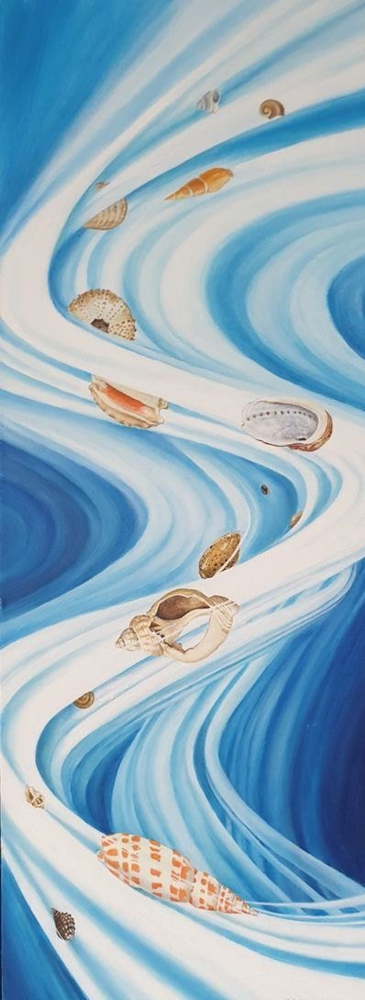

Select the picture to see it larger.
Tumbling Shells
- Medium
- Oil on canvas board
- Year
- 2016
- Price
- Not for sale
- Catalogue no.
- 160
Shells swept by the waves, with the tension caused by the deep sea pulling the shells ever downwards.

Select the picture to see it larger.
Shells swept by the waves, with the tension caused by the deep sea pulling the shells ever downwards.
 Composition: two shells
Composition: two shells Argonaut shell study
Argonaut shell study Against the sea wall
Against the sea wall